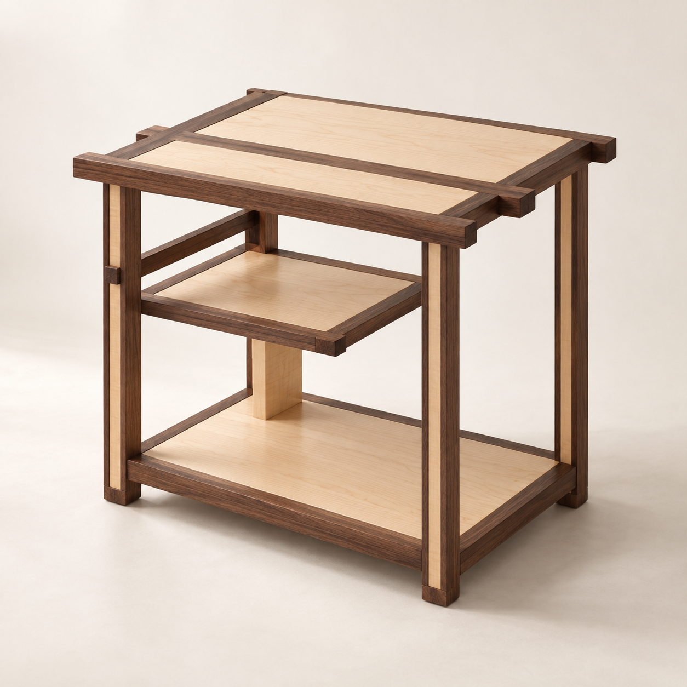
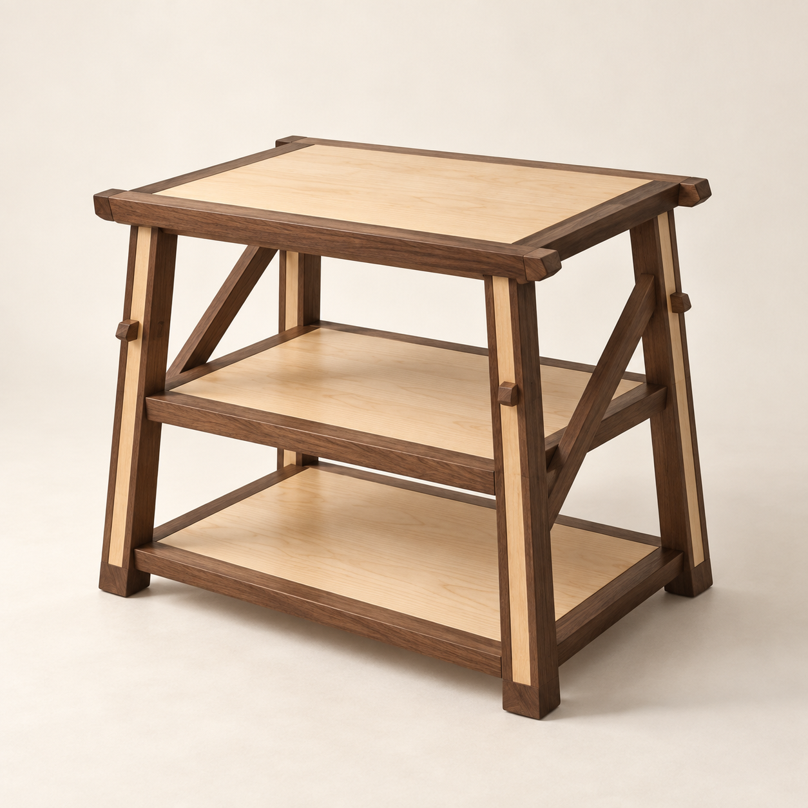
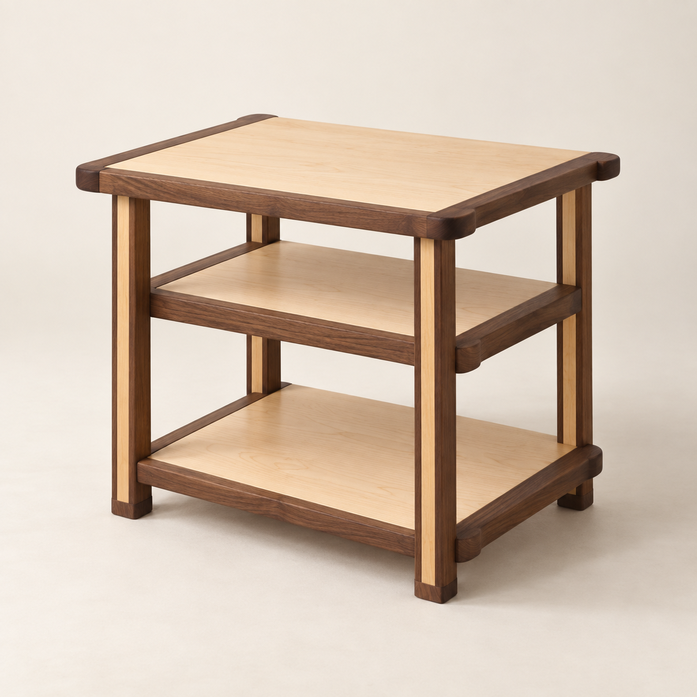

底層改為貼地：CAD置物面離地6 cm、底框下緣3.6 cm，刪除最下面橫飾條。保留胡桃木／楓木／胡桃木三明治腳與深色腳墊，再探索不同輪廓。
三張為AI概念圖，非CAD渲染；尺寸、榫接與部分細節可能偏離提示詞，供造型選擇，未驗證製造或承重。點圖可開啟原圖放大。

中層縮成局部平台，旁邊留下挑高空間。上方出頭線條仍保留，空間分配更有個性。三者中變化最大。

腳柱微微外張，側面改用斜撐，端頭帶斜削。保留完整三層面積，輪廓更有動勢；榫接角度需另行設計。

把出頭端部修成柔和圓角，減少側面橫桿，讓三片板看起來更輕。這張生成的中層錯位較不明顯，主要用來比較圓角和留白。